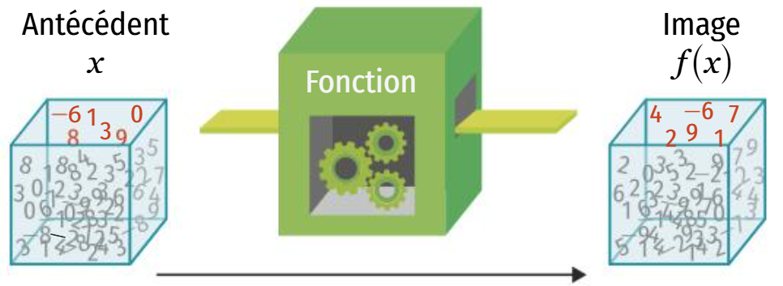
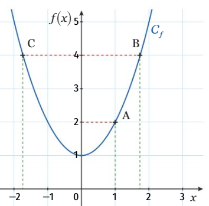
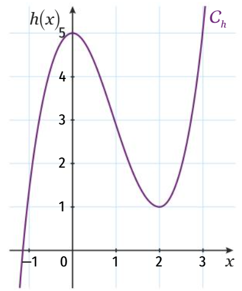
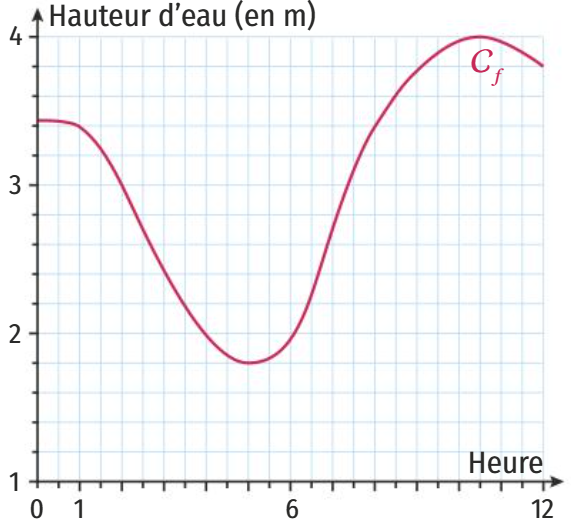
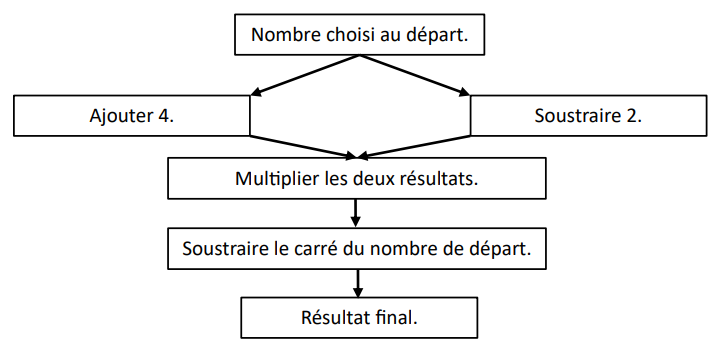
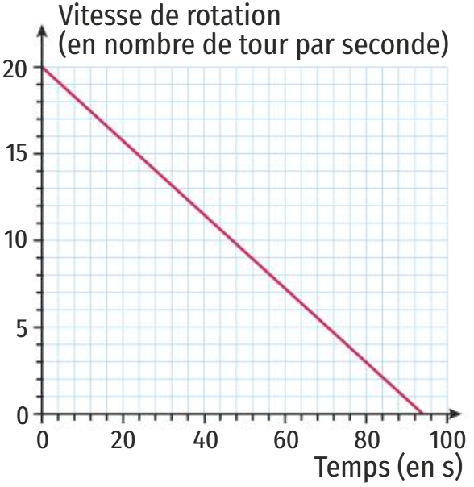

ƒ
x↦y
(x ; y)
f(x)
Réussir ton brevet en toute autonomie !
Chapitre 8 : Introduction aux fonctions
Image, antécédent, représentation graphique, calculs
100 % gratuit
Réussir ton brevet en toute autonomie !
Image, antécédent, représentation graphique, calculs

Choisis un nombre de départ et une fonction, puis observe le calcul pas à pas à l'intérieur de la machine.
| Écriture | Se lit | Vocabulaire |
|---|---|---|
| \( f(3) = 7 \) | « \( f \) de 3 égale 7 » | 7 est l'image de 3 par \( f \) |
| \( f : 3 \mapsto 7 \) | « \( f \) associe 7 à 3 » | 3 est un antécédent de 7 par \( f \) |
| Point \( (3 ; 7) \) | le point de la courbe d'abscisse 3 | abscisse = antécédent, ordonnée = image |
| Tableau de valeurs | colonne « \( x = 3 \) », ligne « \( f(x) = 7 \) » | on lit l'image sous l'antécédent |

Choisis une fonction, puis déplace le curseur pour lire une image ou chercher des antécédents.
Règle les paramètres et observe la méthode : on résout f(x) = k.

| Support | Image de \( a \) | Antécédent(s) de \( b \) | Précision |
|---|---|---|---|
| Expression \( f(x) \) | calculer \( f(a) \) | résoudre \( f(x)=b \) | valeur exacte |
| Tableau de valeurs | lire sous \( a \) dans la ligne \( x \) | chercher \( b \) dans la ligne \( f(x) \), lire \( x \) au-dessus | exacte, mais seulement pour les valeurs données |
| Courbe | vertical → courbe → ordonnée | horizontal → courbe → abscisse(s) | le plus souvent approchée |
Comme au Brevet : chaque série est chronométrée. Réponds le plus vite et le plus juste possible avant la fin du temps imparti !
Ces exercices sont inspirés d'annales du Diplôme National du Brevet. Ils mobilisent les fonctions, les lectures graphiques et les calculs d'images et d'antécédents.

| Réduction (€) | Prix de la place (€) | Nombre de spectateurs | Recette (€) |
|---|---|---|---|
| 0 | 20 | 500 | 10 000 |
| 1 | 19 | ||
| 600 | |||
| 16 |

